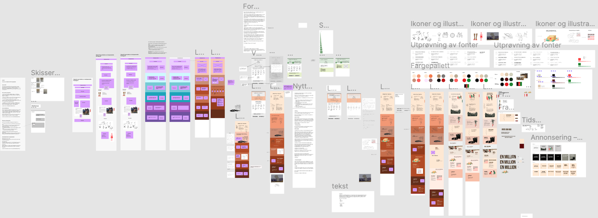
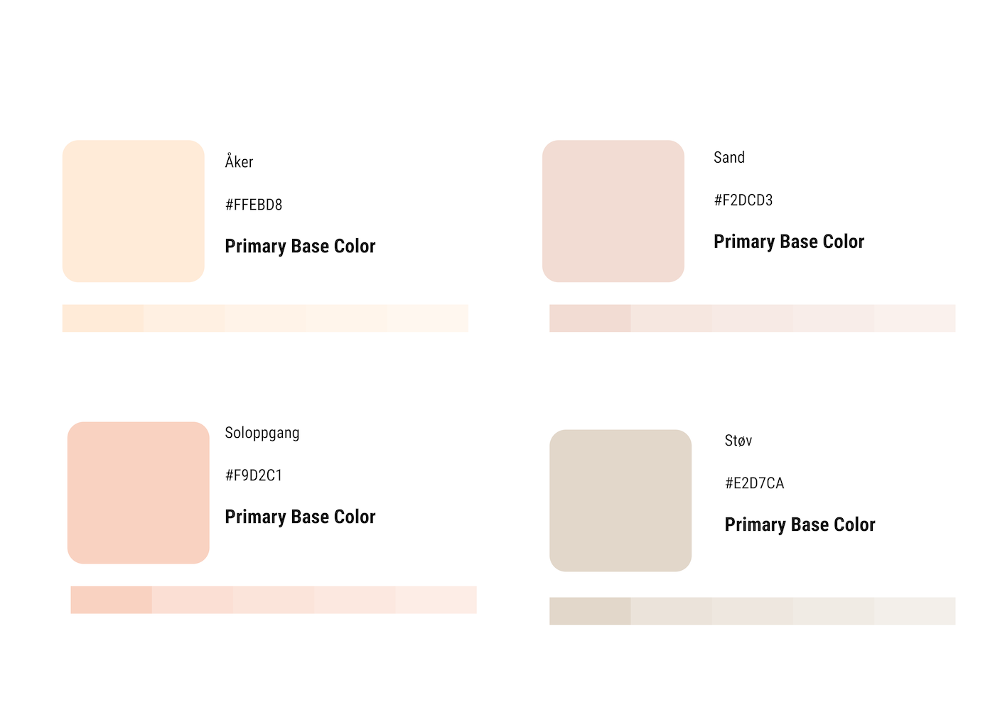
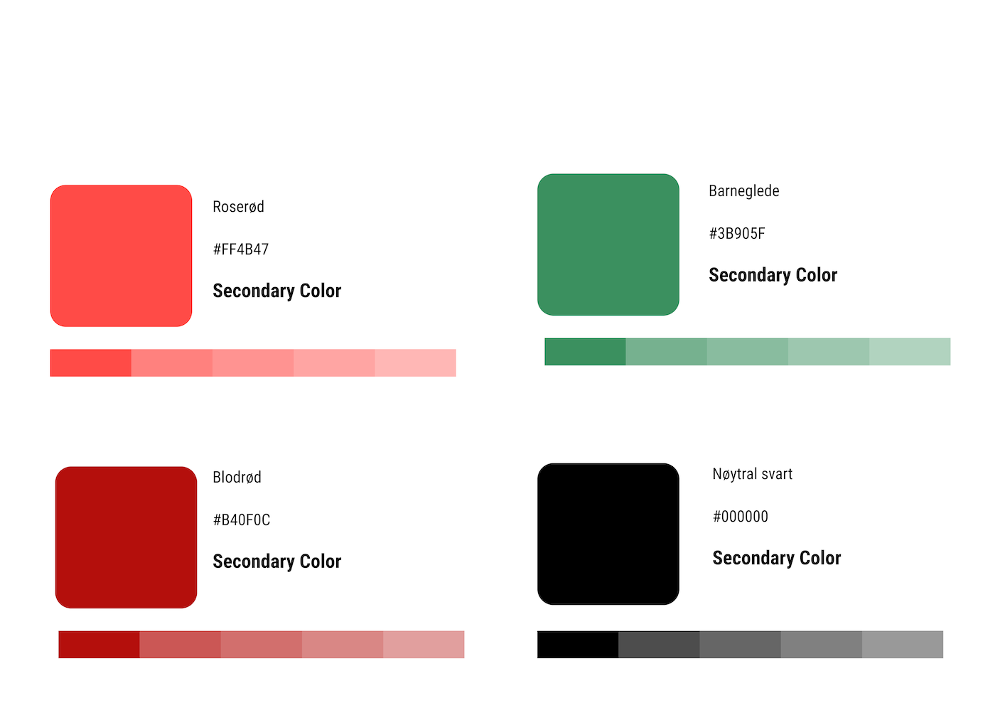
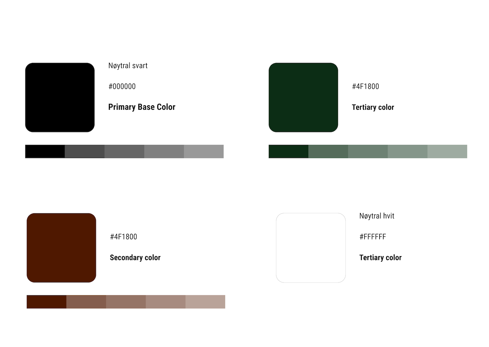
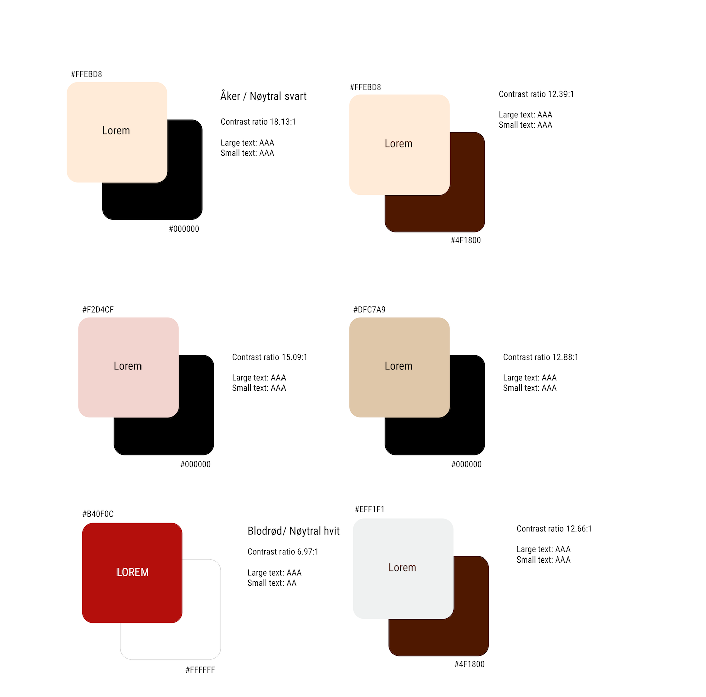
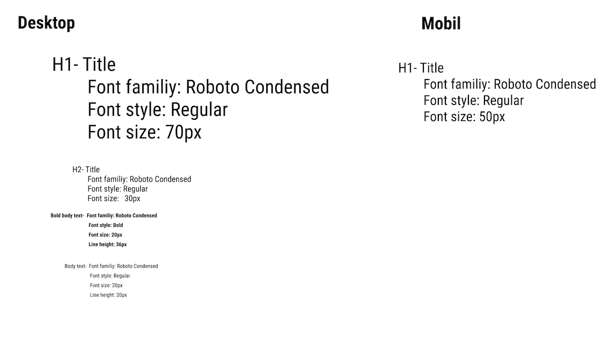

I denne temaoppgaven skulle vi lage en støttekampanje for et valgfritt tema, som besto av en kampanjenettside og anonnse som oppfordrer folk til å engasjere seg i teamet.
Vi har vært to som har utviklet denne kampanjenettsiden, der vi har valg organisasjon UNICEF. Vi ønsket å skape en visualisering av temaet, for hvordan situasjonen for barn i Afghanistan er nå og opplyse at gjennom å donere penger til organisasjonen UNICEF, kan hver og enkelt av oss hjelpe og bidra til å utgjøre en forskjell.
Prosessen
- Prosessen i Figma
- Designsystem - fargepalett
- Kontrastkrav WCAG
- Typografi
- Se nettsiden i HTML og CSS her
- Google Analytics
- Hotjar
Kampanjenettside
Digital markedsføring
Prosessen
I innsiktsfasen jobbet vi med spørreundersøkelser og dybde intervjuer. Var i kontakt med UNICEF, der vi fikk bekreftet at de som støttet dem over tid er hovedsak over 35år og med overvekt av kvinner. De som er mest lojale givere er over 60 år. Dette ble grunnlaget for videre innsikt med dybde intervjuer.
Vi var bevisst i fremdriften vår, der vi la en fremdriftplan som var utgangspunktet for vårt prosjekt. Vi brukte Figma som vi dokumenterte alt av innsikt, inspirasjon fra konkurrenter og andre kampanjenettsider. Her lagde vi wireframes og prototypen. Vi jobbet etter dobbel diamond prosessen, der vi ofte gikk tilbake i prosessen når ny innsikt oppsto
Designsystem - fargepalett
Primærpalett- bakgrunnsfarge
Sekundærfargene- støttefarger
Fontfarger
Kontrastkrav
Typografi
Digital markedsføring
Viser et utdrag fra en av annonsene, og et bilde fra analysen fra Hotjar.